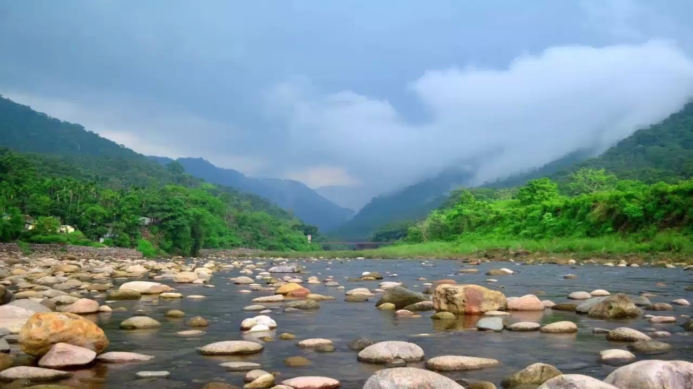
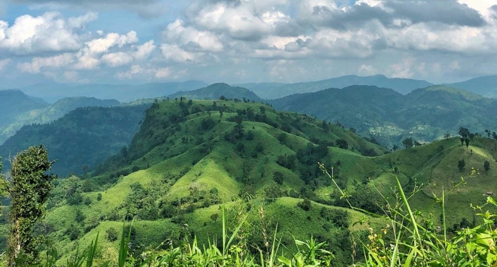

Clouds like fog on the mountain, for the first time, you may not realize. It is so tough to turn your eyes watching the combination of the mountain with the cloud under the blue sky. White Cloud, Blue Sky, High Mountains, Blue Water, what a beautiful sight! Jaflong is such a place like this. We all know, Sylhet is a beautiful place in Bangladesh and Jaflong is one of them. Jaflong is located in Gowainghat Upazila of Sylhet district of Bangladesh, 62 kilometers north-east of Sylhet city, on the foothills of the Khasia-Jaintia hill along India’s Meghalaya border. On the opposite side, it is Khasia Jaintia hill, and in this side the river on the east. The fountain is going on in the hills, and the pebbles of various colored stones on the level of the river. If you look from the distance, it will seem the mountains are standing reclining with the sky. The white clouds are flying touching the mountains. Where else can this kind of beauty be found, except Jaflong? Jaflong, known as the daughter of nature, is familiar all over the country. Piyain River that is piled with the stone will amaze you. The sight of the fountain from Dawki and Khasia Mountains Of India, Dawki Bridge, and the clear water attracts the visitors. If you come to Sylhet and do not visit Jaflong, the traveling of you would seem unfulfilled. Considering the season, Winter or Monsoon, it varies the beauty. In the rainy season, the beauty of Jaflong goes in the different levels. The atmosphere becomes transparent and the environment is clear. The transparent water, the fountain from the mountains and calm environment takes your feeling in another stage. Read more about Lakkatura Tea Garden Sylhet.
First of all, from anywhere in Bangladesh, you have to come first to Bandarban to go to Kokrodong. From Dhaka you will find Bus, It takes 8-10 hours going from Dhaka to Bandarban. Bandarban To Keokradong: When you want to go to Keokradong from Bandarban city, you have to go Ruma Bazar first. Then, from Ruma Bazar, you have to go to the Boga lake, then Keokradong. Within one day it will be a little difficult to reach Keokradong from Bandarban. Normally, tourists stay the night on Boga Lake area, then visit Keokradong in the morning. Watching the Boga lake and staying here the night will make your Keokradong journey more pleasant. Distance from Bandarban to Ruma Bazar is 48 kilometres. You can go by Local Bus or Chander Gari or Jeep to Ruma Bazar. If you want to go by bus, you have to go to the Ruma Bazar bus-stand. After every 1 hour, the bus left for Ruma Bazar from Bandarban. It will take 3 hours with BDT 120. If you go with a team or group, you can easily take Chander Gari or Jeep to control it within the wish of you. It is capable to take 12 to 15 persons and the cost will be near BDT 3000 to 4000. It will need 2 hours to reach Ruma Bazaar when you are taking reserve Chander Gari or Jeep.
